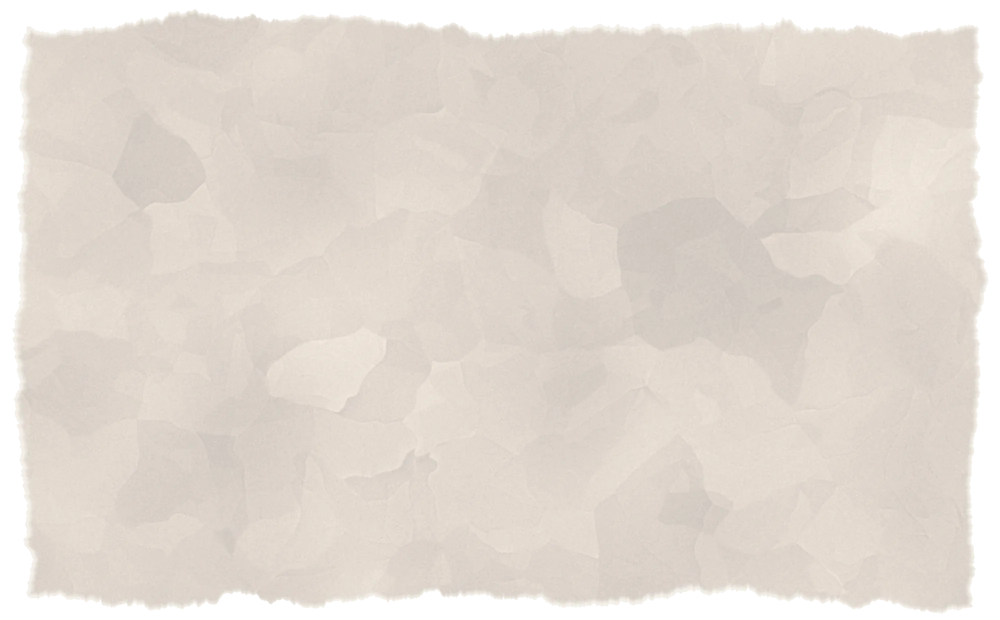
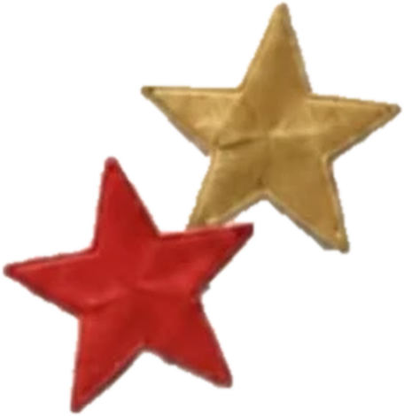

td synnexagent

what it is
a support assistant for microsoft azure questions, built with a team as a td synnex-sponsored capstone at clemson. it answers from trusted microsoft documentation and shows where each answer came from.
how it works
ask
someone describes the azure problem they're stuck on
search
the agent finds the relevant microsoft documentation
answer
a language model gives guidance backed by those docs
hand off
if the evidence isn't good enough, it goes to a human
my part
i'm leading a four-person team building the evaluation framework. it compares the assistant with web search and with a language model on its own, across accuracy, citation quality, latency, and token usage.
why it matters
a confident wrong answer is worse than no answer in support work. so the agent is built to know when to stop and bring in a person.